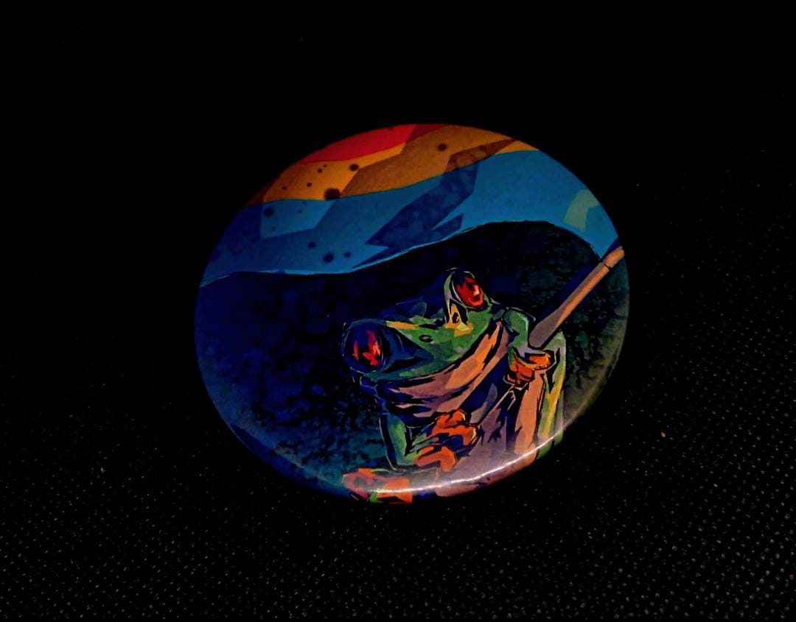

Pride Flag
Bandeira arco iris com fundo esverdeado
Trans Flag
Bandeira do orgulho trans com fundo preto
Lesbian flag
Bandeira do orgulho lesbico com fundo branco

Pan flag
Bandeira do orgulho pan com fundo preto
Demi flag
Bandeira do orgulho demissexual com fundo branco
Também disponivel em sticker